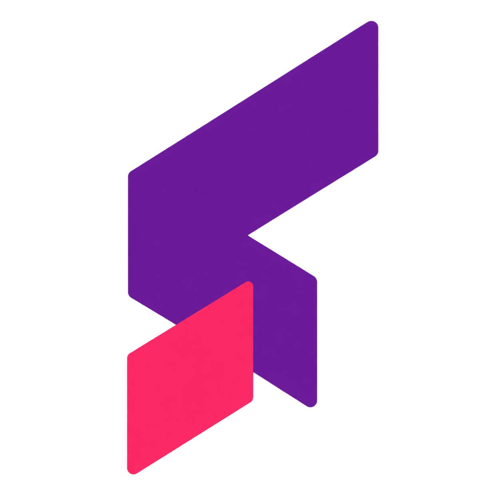
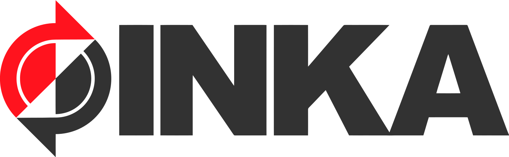
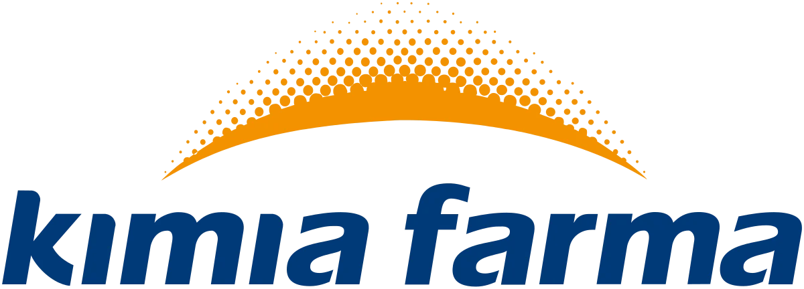

01
SOFTWARE ENGINEERING
JDIH Portal
A legal-information platform built for clearer access, management, and compliance workflows.
Hover a node to exploreAnalytical thinkingwith a businessperspective.
ALDO'S PROJECTS
01 — SOFTWARE ENGINEER PROJECTDesigning &
Designing &
Building JDIH Website.
Digital legal-information platform built to make public documents easier to find, understand, and manage.
PT INKA (Persero)02 — DATA ANALYST PROJECTKimia Farma
Kimia Farma
Big Data Analytics.
Performance analytics project to turn operational data into clearer commercial and pharmacy insights.
PT Kimia Farma Tbk03 — BUSINESS INTELLIGENCE PROJECTAutomotive
Automotive
Market Pulse 2025.
Analytics for navigating EV disruption and improving dealer-stock strategy across the market.
GAIKINDO04 — BUSINESS INTELLIGENCE PROJECTFuture of Work
Future of Work
2025.
Workforce intelligence for navigating the transition to an AI-enabled world of work.
Global Workforce SolutionsToolkit to transform
data into
decisions.
Delivering robust analysis and clear visual dashboards to turn business challenges into measurable success.
SQLPythonExcel / SheetsFigma
Power BI / Data StudioGoogle SlidesJiraDraw.ioPower Query / Colab


Sitespirit

Sekawan Media

PT INKA (Persero)

PT Kimia Farma Tbk
